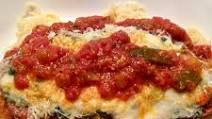

Chicken Parmesan

Description
This one is a bit more complicated if you don't have cooking experience.
Unlike spaghetti which is simple, you're going to have to do a little bit of wisking and
mixing ingredients. Regardless, making this dish is surely worth it.
Ingredients
- Chicken breast
- Eggs
- Panko crumbs
- Parmesan cheese
- Tomato sauce
- Olive oil
Steps
- Prep raw chicken
- Add panko crumps to wisking bowl
- Add eggs to panko crumbs and wisk thoroughly
- Apply mixture to chicken by rolling raw chicken around in the bowl
- Cook chicken
- Cook tomato sauce in pan
- When chicken is done, add tomato sauce to chicken
- Add parmesean cheese to the top of the chicken
- Enjoy!